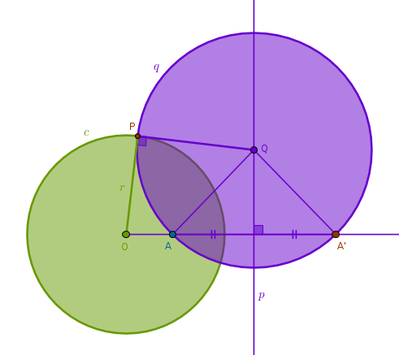
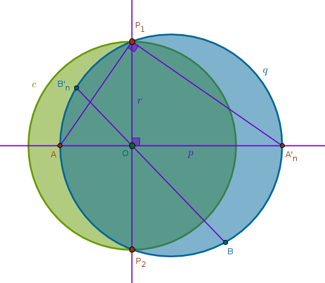
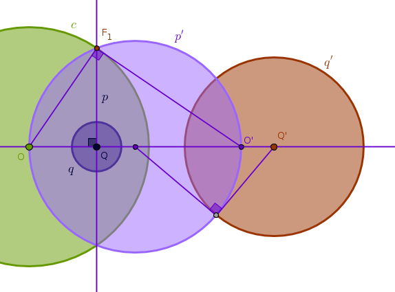
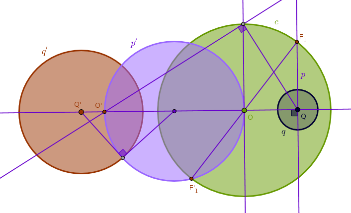
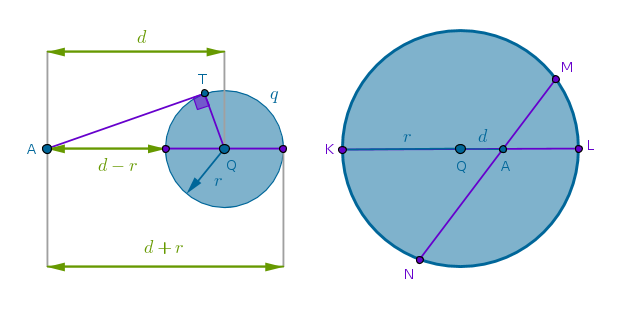
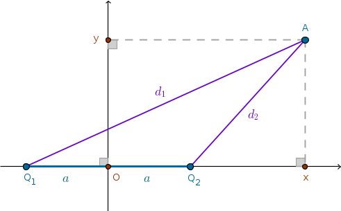
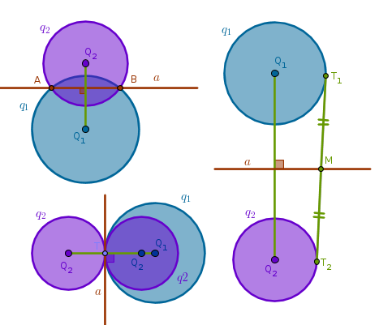
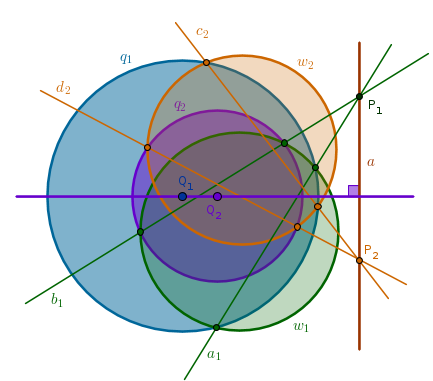
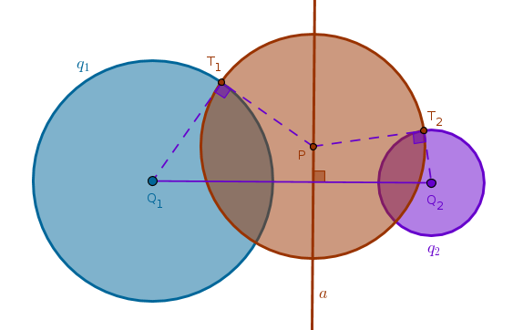

Points of Tangency
Property ICP36
If a straight line \(l\) and a circle \(q\) touch each other at a point \(T\) different from the center of inversion \(O\) then their images \(l'\) and \(q'\) under an inversion with respect to a circle \(c(O, r)\) must also touch at a point \(T'\) which is an image of \(T\) under the same inversion with respect to \(c(O, r)\)
Property ICP37
If two circles \(q_1\) and \(q_2\) touch each other at a point \(T\) different from the center of inversion \(O\) then their images \(q'_1\) and \(q'_2\) under an inversion with respect to a circle \(c(O, r)\) must also touch at a point \(T'\) which is an image of \(T\) under the same inversion with respect to \(c(O, r)\)
These properties apply to inversion with positive and negative powers and follow from the angle preservation properties and the fact that by definition a tangency point is single - meaning just one point corresponding to a limiting position of a secant to a given curve at that point. From ICP6 it follows that the image of such a point \(T\) under the inversion with respect to \(c(O, r)\) is unique. Therefore if \(T\) belongs to two curves at once then its image \(T'\) must also belong to the images of these curves as well.
Orthogonal Circles
From ICD2 it follows that two curves are orthogonal at a point \(P\) or intersect orthogonally at a point \(P\) if their tangents at \(P\) are perpendicular. In practical terms then two circles are orthogonal if their radii form a right angle at any intersection point. From B3P36,37 two properties follow:
Property ICP38
Any circle \(q\) passing through two points \(A\) and \(A'\) inverse to each other with respect to a circle \(c(O, r)\) with positive power is orthogonal to \(c\)
From ICC3 we have:
$$OA \times OA' = r^2$$The locus of centers of circles passing through \(A\) and \(A'\) must, by definition, be on the perpendicular bisector of \(AA'\), \(p\). Pick an arbitrary point \(Q\) on \(p\). Construct a circle centered at \(Q\) with radius \(QA = QA'\). Name one point where \(c\) and \(q\) intersect \(P\). Since \(P\) is on \(c\)'s circumference, \(OP = r\) and hence:
$$OA \times OA' = r^2 = OP^2$$Since \(P\) is on \(q\)'s circumference, B3P37 is applicable to a point \(O\), a secant \(OA'\) and a line \(OP\) falling on a circle \(q\):
if \(OP^2 = OA \times OA'\) then \(OP\) touches \(q\)
Since:
$$OP^2 = OA \times OA'$$is indeed true then it follows that \(OP\) is perpendicular to \(QP\):

Property ICP39
If two circles \(c(O, r)\) and \(q(Q, R)\) are orthogonal then two points of intersection of any secant of \(q\) through \(O\) are inverses of each other with respect to \(c\) with positive power and vice versa
Here we are given that \(OP\) is tangent to \(q\), \(O\) is outside \(q\) and hence for any secant of \(q\) through \(O\) from B3P36 it follows that:
$$OP^2 = OA \times OA'$$but:
$$OP = r$$\(O\), \(A\) and \(A'\) are collinear with \(A\) and \(A'\) on the same side of \(O\). Hence, \(A\) and \(A'\) are inverses of each other with respect to \(c\) with positive power.
Note that we can repeat all the previous deductions by applying them to any secant of \(c\) through \(Q\) and prove that if \(c\) and \(q\) are orthogonal then the two points of intersection of any secant of \(c\) through \(Q\) are inverses of each other with respect to \(q\) with positive power.
From the above two properties the next one follows right away:
Property ICP40
If two circles \(c(O, r)\) and \(q(Q, R)\) are orthogonal then each of them is invariant under the inversion with positive power with respect to the remaining circle
Let us consider an inversion of \(q\) with respect to \(c\). From ICP39 it follows that \(c\) splits \(q\) into two mutually inverse arcs - the inner arc, inside \(c\), and the outer arc, outside \(c\). Barring the intersection points of \(q\) and \(c\) (which are fixed) all the other points on the inner arc of \(q\) have their images on the outer arc of \(q\) and vice versa.
It follows then that even though these points on \(q\) do not transform into themselves \(q\) as a whole - does. This proves that \(q\) is invariant under the inversion with positive power with respect to \(c\) which is yet another example of an invariant figure and an identity transformation.
We can now swap the roles of \(c\) and \(q\) and repeat the above paragraph verbatim proving that \(c\) is invariant under the inversion with positive power with respect to \(q\).
Even though the following circles are not, of course, orthogonal but for inversions with negative power there is a property similar, at the intuitive level, to that of ICP40:
Property ICP41
Any circle \(q\) that passes through two diametrically opposite points \(P_1\) and \(P_2\) on another circle \(c(O, r)\) is invariant under the inversion with respect to \(c\) with negative power
Construct a Line(\(P_1\), \(P_2\)) and a line \(p\) through \(O\) perpendicular to Line(\(P_1\), \(P_2\)). Name the intersection points of \(p\) and \(q\) as \(A\) and \(A'_n\). The circumference angle \(\angle AP_1A'_n\) subtends the diameter \(AA'_n\) and hence is right (B3P31). In \(\triangle AP_1A'_n\) Line(\(P_1\), \(P_2\)) is a perpendicular drawn from the right angle at \(P_1\) to the base \(AA'_n\). From B6P8 it follows then that \(\triangle AOP_1\) and \(\triangle P_1OA'_n\) are similar and hence (B6P4):
$$\frac {OA}{OP_1} = \frac {OP_1}{OA'_n}$$ $$OA \times OA'_n = OP_1^2 = r^2$$From ICC1,2,3 it follows then that \(A\) and \(A'_n\) are inverses of each other with respect to \(c\) with negative power. Further, pick an arbitrary point \(B\) on \(q\) and construct a Line(\(B\), \(O\)) which will intersect \(q\) at \(B'_n\):
Since B3P35 applies to any intersecting chords of \(q\), we have:
$$OB \times OB'_n = OA \times OA'_n = r^2$$which means that \(B\) and \(B'_n\) are images of each other under the inversion with respect to \(c\) with negative power. Here, again, \(c\) cuts \(q\) into two mutually inverse arcs and, consequently, \(q\) is invariant under the inversion with respect to \(c\) with negative power. Note, however, that \(c\) is not invariant under the inversion with negative power with respect to \(q\).
Property ICP42
If a circle \(q\) is invariant under the inversion with respect to a circle \(c(O, r)\) with negative power then \(q\) cuts \(c\) at two points \(P_1\) and \(P_2\) diametrically opposite to each other on \(c\)
This property is the converse of ICP41. Since \(q\) is invariant under the inversion with respect to \(c\) with negative power, any pair of points on \(q\) must trade places while staying collinear with \(O\). The points of intersection of \(q\) and \(c\), \(P_1\) and \(P_2\), form such a pair and since they too must be collinear with \(O\) they must be diametrically opposite to each other on \(c\).
Now that we know that angles and tangency points under inversion are
preserved we can investigate how the centers of inverse circles are connected
to each other in reference to the center of inversion:
Exercise ICE9
Given a circle of inversion \(c(O, r)\) and two circles \(q(Q, R)\) and \(q'(Q', R')\) which are inverses of each other with respect to \(c\) find a way to invert \(Q\) into \(Q'\) and vice versa
Let us consider an inversion with positive power first.
From ICD2 it follows that any straight line through \(Q\) is orthogonal to \(q\). Out of multitude of such lines let us pick a convenient one that does not pass through \(O\) - a line \(p\) perpendicular to Line(\(O\), \(Q\)). We know that inversion preserves angles so if \(p\) is orthogonal to \(q\) then the image of \(p\) with respect to \(c\), \(p'\), must remain orthogonal to the image of \(q\) with respect to \(c\), \(q'\).
However, in this case from ICP10 it follows that \(p'\) is a circle that passes through \(O\). Since \(p'\) is orthogonal to \(q'\), from ICP40 it follows that \(p'\) is invariant under the inversion with respect to \(q'\) with positive power which in turn means that \(O'\) is the image of \(O\) with respect to \(q'\) under that inversion.
From our construction of \(p'\), see ICP10, it follows that \(O'\) is also the image of \(Q\) with respect to \(c\). As such, the point \(O'\) plays two roles at the same time and the solution to our problem should be obvious now:
to locate \(Q\) we first invert \(O\) with respect to \(q'\) (with positive power) into \(O'\) and then we invert \(O'\) with respect to \(c\) (also with positive power) into \(Q\):
We can now reverse the order of operations and formulate the solution for locating \(Q'\) - first invert \(O\) with respect to \(q\) into \(O'\) and then invert \(O'\) with respect to \(c\) to locate \(Q'\). We did not supply the drawing for this scenario - you are encouraged to do it yourself.
Let us now consider an inversion with negative power.
Construct a perpendicular \(p\) to Line(\(O\), \(Q\)) and invert it with respect to \(c\) with negative power. While doing so we will obtain a point \(O'\) which is an image of \(Q\) with respect to \(c\), see ICP11. Since \(p\) is orthogonal to \(q\), its image, \(p'\), will remain orthogonal to the image of \(q\), \(q'\). From ICP40 it follows then that \(p'\) is invariant under the inversion with respect to \(q'\) with positive power which in turn means that \(O'\) is an image of \(O\) under that inversion.
From here we conclude that to locate \(Q\) we first invert \(O\) with respect to \(q'\) with positive (!) power into \(O'\) and then we invert \(O'\) with respect to \(c\) with negative (!) power into \(Q\):
We can now reverse the order of operations and state that to locate \(Q'\) we first invert \(O\) with respect to \(q\) with positive (!) power into \(O'\) and then we invert \(O'\) with respect to \(c\) with negative (!) power into \(Q'\). We did not supply the drawing for this scenario - you are encouraged to do it yourself.
A Power of a Point
Definition ICD3
A power \(\mathcal{P}\) of a point \(A\) with respect to a circle \(q(Q, r)\) is the difference between the square of the distance from the point \(A\) to the center of the circle \(Q\) and the square of the radius of the circle \(r\):
$$\mathcal{P}(A, q) = d^2 - r^2 = AQ^2 - r^2$$ Case 1
If \(A\) is located outside \(q\) then:
$$AQ = d > r$$the difference of squares is positive and it can be rearranged as follows:
$$\mathcal{P}(A, q) = d^2 - r^2 = (d + r)(d - r) = AT^2$$The sum \((d + r)\) is the entire length of the secant of \(q\) through \(A\) while the difference \((d - r)\) is its outer portion. If we construct a tangent \(AT\) to \(q\) through \(A\) then from B3P36 the above formula follows right away and we observe that in this particular case a power of the point \(A\) with respect to \(q\) is the square of the length of the tangent to \(q\) through \(A\).
Further, if we construct a circle \(s(A, AT)\) (not shown) then its radius \(AT\) is perpendicular to the radius \(QT\) and if follows that \(s\) and \(q\) are orthogonal. We will use this observation later in Radical Axis section.
Case 2
If \(A\) is located directly on the circumference of \(q\) then:
$$d = r$$and the power of \(A\) with respect to \(q\) is zero.
Case 3
If \(A\) is located inside \(q\) then:
$$d < r$$the power of \(A\) with respect to \(q\) is negative and it can be rearranged as follows:
$$\mathcal{P}(A, q) = d^2 - r^2 =$$ $$-(r^2 - d^2) =$$ $$(r + d)(r - d) =$$ $$-AK \times AL =$$ $$-AM \times AN$$for any secant of \(q\) \(MN\) which follows from B3P35.
Radical Axis
Definition ICD4
A radical axis of two circles \(q_1\) and \(q_2\) is a locus of points whose powers with respect to \(q_1\) and \(q_2\) are equal
Instead of proving each of the upcoming cases separately it is easier to use one theorem to cover them all:
Theorem ICT1
A radical axis of any two nonconcentric circles \(q_1(Q_1, r_1)\) and \(q_2(Q_2, r_2)\) is a straight line perpendicular to the straight line passing through the centers of these circles \(Q_1\) and \(Q_2\)
We can always choose an orthogonal \(xOy\) coordinate system in such a way the its \(x\)-axis passes through the points \(Q_1\) and \(Q_2\) and its \(y\)-axis passes through the middle point \(O\) between \(Q_1\) and \(Q_2\).
If we take:
$$OQ_1 = OQ_2 = a$$then:
Next, we can place an arbitrary point \(A\) anywhere with respect to the axes and the points \(Q_1\) and \(Q_2\) but regardless of this placement the proof follows the same path. Let \(d_1\) and \(d_2\) be the distances from such an arbitrary point \(A\) to the centers \(Q_1\) and \(Q_2\) correspondingly. By definition of a power of a point with respect to a circle we have:
$$\mathcal{P}_1(A, q_1) = d_1^2 - r_1^2$$ $$\mathcal{P}_2(A, q_2) = d_2^2 - r_2^2$$ $$\mathcal{P}_1 = \mathcal{P}_2$$ $$d_1^2 - r_1^2 = d_2^2 - r_2^2$$ $$d_1^2 - d_2^2 = r_1^2 - r_2^2 = const = k$$We can also safely assume that:
$$k \geqslant 0$$since if it is not then we can always swap the roles of the circles and renumber them.
The coordinates of an arbitrary point \(A\) are \((x, y)\) (which can vary) and from the right triangles \(\triangle AxQ_1\) and \(\triangle AxQ_2\) we have:
$$d_1^2 = y^2 + (a + x)^2 = y^2 + a^2 + 2ax + x^2$$ $$d_2^2 = y^2 + (x - a)^2 = y^2 + x^2 - 2xa + a^2$$ $$d_1^2 - d_2^2 = 4ax = k$$ $$x = \frac {k}{4a}$$which is an equation of a straight line perpendicular to the \(\)-axis.
Case 1
From this theorem and the definition of a power of a point with respect to a circle it follows that the radical axis \(a\) of two circles \(q_1\) and \(q_2\) that intersect at \(A\) and \(B\) is a straight line through \(A\) and \(B\) as the powers of both intersection points with respect to \(q_1\) and \(q_2\) are equal, zero, and two distinct points define a unique straight line which is also perpendicular to Line(\(Q_1\), \(Q_2\)).
Case 2
If two circles touch at \(T\) externally or internally then the powers of \(T\) with respect to both circles are equal, zero. Hence, the radical axis \(a\) must pass through \(T\) and it must be perpendicular to the straight line passing through the centers of the touching circles. In this case the radical axis \(a\) coincides with the tangent through \(T\) common to both circles.
Case 3
There is more than one way to construct a radical axis \(a\) of two circles that are not in contact and are outside each other. One way would be to observe that in this particular case a power of a point with respect to a circle is the square of the length of a tangent through the point to the circle. Hence, to find a radical axis of two such circles we need to find a point the length of a tangent from which to both circles is the same. One such obvious point, for example, is a middle point \(M\) of a common external tangent \(T_1T_2\): \(MT_1 = MT_2\). Constructing a straight line through \(M\) perpendicular to the straight line through the centers of both circles locates their radical axis \(a\):
Case 4
It is easier to construct the radical axis \(a\) of two nonconcentric circles that are not in contact and one is inside the other by using the method of intersecting loci. Here we employ the fact that a radical axis of two intersecting circles is a straight line passing through their intersection points.
Construct an arbitrary helper circle \(w_1\) that intersects both given circles and thus locates two pairs of intersection points. Then, \(a_1\) is a radical axis of \(q_1\) and \(w_1\) and \(b_1\) is a radical axis of \(q_2\) and \(w_1\). It stands to reason then that \(a_1\) and \(b_1\) intersect at a point \(P_1\) which must belong to a radical axis of \(q_1\) and \(q_2\).
Now either construct a second pair of intersecting radical axes (as we have done) or construct a straight line through \(P_1\) perpendicular to Line(\(Q_1\), \(Q_2\)):
Lastly, let us consider the points on the radical axis. Some of these points can be located inside both circles, as in Case 1, for example, between the points \(A\) and \(B\), while others can be located on both circles, as in case Case 2 for the point \(T\), or outside both circles, as in all the other cases.
When a point on a radical axis is located outside (or on) both circles then we can apply the Power of a Point, Case 1 observation - any circle centered at such a point with a radius equal to the length of a tangent to either circle through that point will be orthogonal to both given circles simultaneously. When a point on a radical axis is located on both given circles, point \(T\) in Case 2, then we simply have a case of a degenerate circle of zero radius.
It follows then that for any point on a radical axis located on or outside both given circles there exists a unique circle orthogonal to both of them. In other words, the locus of the centers of circles orthogonal to both given circles is the entire radical axis for the cases 2, 3 and 4 and the entire radical axis excluding the LineSegment(\(A\), \(B\)) for Case 1.
To construct one such circle choose a point on a radical axis that is located outside both given circles, \(P\), construct a tangent through \(P\) to one of the given circles to locate their tangency point \(T_1\), draw a Circle(\(P\), \(PT_1\)):
It is also fairly obvious to observe and easy to prove the converse statement:
if a circle \(q\) is orthogonal to two given circles \(q_1\) and \(q_2\) then its center must be located on the radical axis of \(q_1\) and \(q_2\)
\(\blacksquare\)